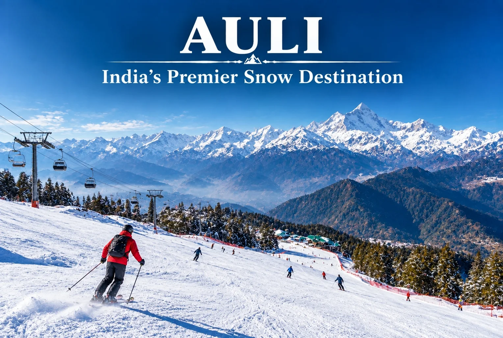
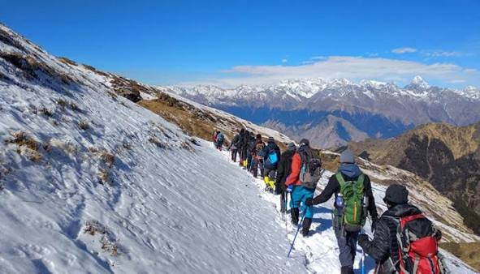
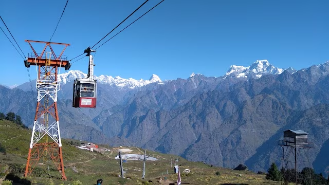
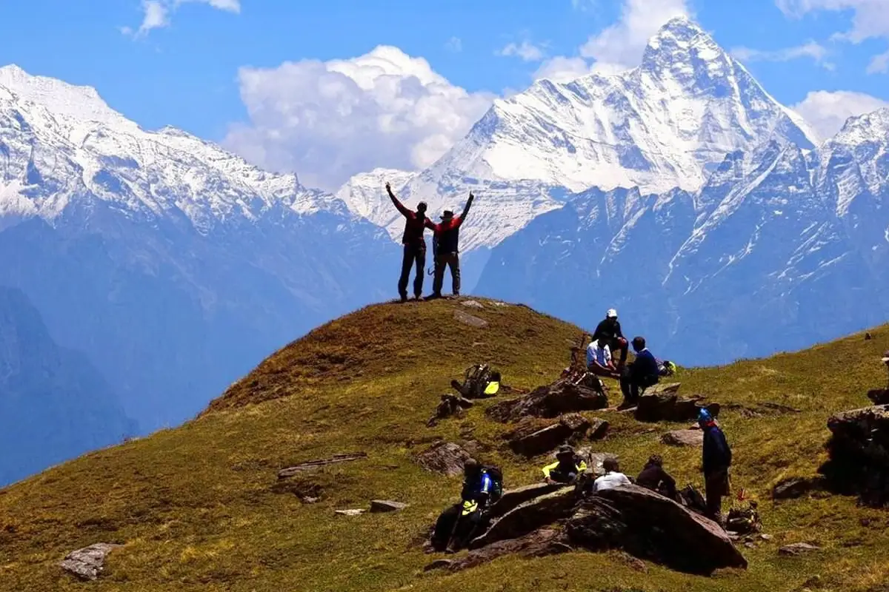

The Panoramic Meadow of the Gods
Perched high in the Chamoli district of Uttarakhand at an elevation of 2,800 meters, Auli is a premier Himalayan ski station wrapped in vast, rolling alpine meadows (known locally as Bugyals). Surrounded by old-growth oak and coniferous pine forests, its single greatest feature is an unobstructed, jaw-dropping panoramic view of India’s highest, most revered peaks—including Nanda Devi, Kamet, and Dunagiri.
Auli carries a clean, sharp, and intensely majestic alpine energy. It is far less commercialized than other hill stations, making it feel deeply embedded in the grand scale of the Garhwal Himalayas. The wind hums silently through the pine needles, occasionally broken by the soft crunch of ski bindings or the excited boots of trekkers prepping to break above the tree-line. It is a space designed for crisp mountain air, steady focus, and sweeping sky vistas.

Carve down neat, wind-sheltered slopes extending over 4 kilometers. The gradient varies from beginner-friendly drops to fast, sweeping corridors designed for seasoned alpine speedsters.

Embark on a classic winter expedition threading through dense oak forests and opening up to dramatic, front-row lookouts directly facing the monstrous silhouette of Mt. Nanda Devi.

Soar above deep alpine ravines on one of Asia's longest bi-cable ropeways. The 4.15-kilometer line transports you from Joshimath straight onto Auli’s high ridges.

Hike up to the high alpine meadows sitting at 3,056 meters. Pitch a four-season tent on open ridges and watch the setting sun paint the peaks in deep shades of gold and violet.